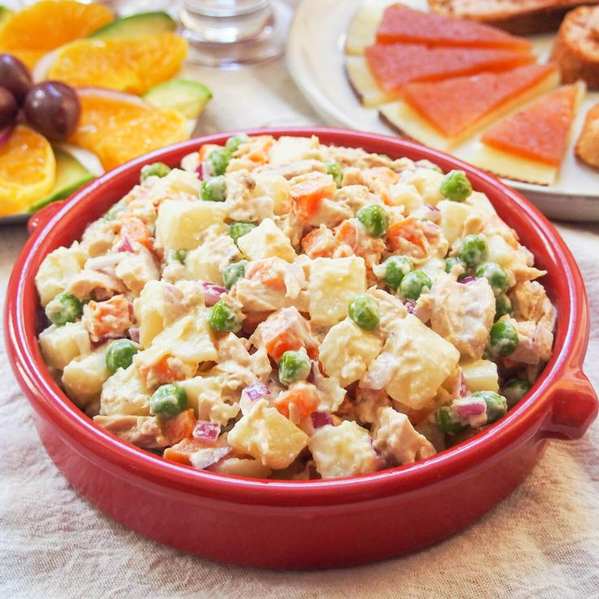

Ensaladilla Rusa

Ingredientes:
- 1 patata mediana
- 1 zanahoria pequeña
- 1 huevo (cocido)
- 1/2 lata de atún (en aceite o al natural, al gusto)
- 2-3 aceitunas verdes (en rodajas o picadas)
- 2 cucharadas de guisantes (pueden ser congelados o de bote)
- (Opcional) 1 o 2 tiras de pimiento morrón (para decorar)
- Sal al gusto
- 2-3 cucharadas de mayonesa (puede ser casera o de bote, según prefieras)
Preparación:
- Pela la patata y la zanahoria, córtalas en cubitos pequeños.
- Hierve ambas en agua con sal durante unos 12-15 minutos (la patata debe estar tierna pero no deshecha). Añade los guisantes en los últimos 4-5 minutos si son congelados.
- En otro cazo, cuece el huevo (10 minutos desde que el agua empiece a hervir). Luego enfría y pélalo.
- Cuando las verduras estén listas, escúrrelas bien y déjalas enfriar completamente.
- Desmenuza el atún, pica el huevo cocido (reserva una rodajita para decorar si quieres), las aceitunas y mézclalo todo con las verduras.
- Añade la mayonesa y mezcla suavemente. Ajusta de sal si hace falta.
- Sirve fresquita, decorada con huevo duro, pimiento morrón o unas aceitunas por encima si quieres que luzca